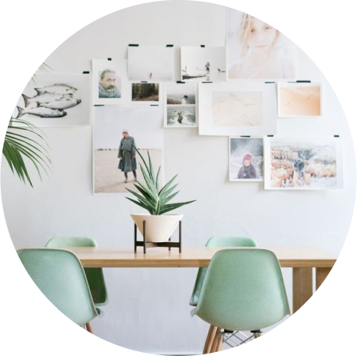
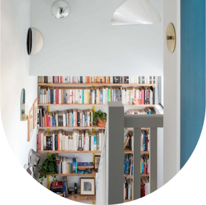

<section class="project">
   <div class="project__container _container">
      <div class="project__info">
         <h2 class="project__title title element_animation">Our project </h2>
         <p class="project__descr">Introducing our first official project</p>
      </div>
      <div class="project__projects _projects">
         <div class="_projects__item">
            <a href="">Project Livingroom
            </a>
            <p>A simple guide to create the perfect livingro-
               om for . Night Watc works beautifully in a wi-
               de gamut of arrangements.</p>
            <picture>
               <source srcset="img/project/pic1.png" media="(min-width:1550px)">
               <source srcset="img/project/pic1(350).png" media="(min-width:1350px)">
               <source srcset="img/project/pic1(300).png" media="(min-width:1200px)">
               <source srcset="img/project/mobile/mobilePic1.png" media="(min-width:650px)">
               <source srcset="img/project/mobile/Pic1.png" media="(min-width:150px)">
               
            </picture>

         </div>
         <div class="_projects__item fro">
            <picture>
               <source srcset="img/project/pic2.png" media="(min-width:1550px)">
               <source srcset="img/project/pic2(350).png" media="(min-width:1350px">
               <source srcset="img/project/pic2(300).png" media="(min-width:1200px">
               <source srcset="img/project/mobile/Pic2.png" media="(min-width:650px)">
               <source srcset="img/project/mobile/mobilePic2.png" media="(min-width:150px)">
               
            </picture>
            <div>
               <a href="">
                  Project workspace
               </a>
               <p>A simple guide to create the perfect livingro-
                  om for . Night Watc works beautifully in a wi-
                  de gamut of arrangements.</p>
            </div>
         </div>
         <div class="_projects__item">
            <a href="">
               Library
            </a>
            <p>A simple guide to create the perfect livingro-
               om for . Night Watc works beautifully in a wi-
               de gamut of arrangements.</p>
            <picture>
               <source srcset="img/project/pic3.png" media="(min-width:1550px)">
               <source srcset="img/project/pic3(350).png" media="(min-width:1350px">
               <source srcset="img/project/pic3(300).png" media="(min-width:1200px">
               <source srcset="img/project/mobile/pic3.png" media="(min-width:650px)">
               <source srcset="img/project/mobile/mobilePic3.png" media="(min-width:150px)">
               
            </picture>
         </div>
      </div>

   </div>
</section>